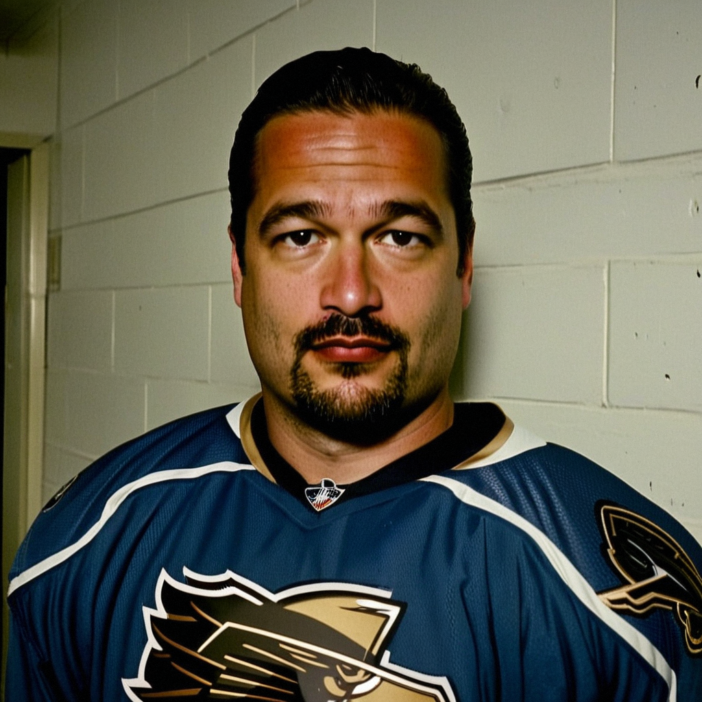

Kolzig knows what the crease sounds like at home, and it is not this
After a 1-3 loss to New York Islanders® that made his home mark 10-10, the Capitals' goaltender talks about the noise, the shutout drought, and why the road suits him better than the building.
 Jan KowalczykRinkside reporter and studio host · The Tunnel
Jan KowalczykRinkside reporter and studio host · The Tunnel
2:38 · synthetic voices, produced from the record · download
 Olaf Kolzig93 has dressed for 41 of
Olaf Kolzig93 has dressed for 41 of  Washington Capitals's 44 games and picked up 22 wins, but tonight's 1-3 loss to
Washington Capitals's 44 games and picked up 22 wins, but tonight's 1-3 loss to  New York Islanders at home slid his club's home record to 10-10 while the road mark sits at 15-9. The 34-year-old, last season's Vezina Trophy winner, has one shutout to his name this year. After the game, Jan Kowalczyk found him at the boards.
New York Islanders at home slid his club's home record to 10-10 while the road mark sits at 15-9. The 34-year-old, last season's Vezina Trophy winner, has one shutout to his name this year. After the game, Jan Kowalczyk found him at the boards.
Transcript
Jan Kowalczyk here with Olaf Kolzig. Olaf, twenty on twenty in the shot column and three of them go in. Walk me through that third goal.
The third one, yeah. I'm set, I'm square, I can see the puck from the point and then the screen comes and it's, uh, gone. The body was right, you know? The hands were right. But the, the angle was taken from me and the, the rebound, I couldn't, I couldn't close it. That's, that's a goal where you think, okay, the screen was late, I can't see it. But you still, you still have to make it.
You've got 15 wins on the road this year and 10 at home. That's a big gap. You're the one sitting in the crease every night. What does this building do to you that the other buildings don't?
Yeah. Well. The other building, you, you know what you're getting. The crowd is against you and you can track, you can hear the puck off the glass, everything is clean. Here, here they're with you, and they get quiet when it's close and they get loud when we, when we miss, and that, that changes the rhythm. I can feel it from the net. The guys press more here. They try one more play, they hold the puck, and the, the turnover comes, and suddenly it's two on the other way. That doesn't happen in, in Columbus or in, in Pittsburgh. They just dump and go.
When we talked in December you told me the Vezina stops nothing and you were still waiting on the first shutout. You've got one now, but it's been 41 games and one. That's a number that would bother a lot of men.
You remember the shutout thing. Yeah. One. And I, I want two, I want three. But you look at the games, Jan, we win 2-1 and I'm in there for the whole 60 and the guys in front of me, they're clearing, they're blocking, and the one, the one puck gets through, and it's not a shutout. It's, it's one goal. I've taken the losses where the guys in front of me, they're not, they're not there. I'll take those. The 2-1 where I'm the one that, where it's on me? I don't take those. So, the shutout, it comes. I don't, I don't chase it.
But you've played 41 of 44. Maxime Ouellet is the backup and he's 82 overall, he's ready. Does the coach even think about taking you out?
Well, he takes me out when he wants to. When I'm not sharp. And I know when, when I'm not, you know? The first period, when the legs are, the legs are not there yet. But 41, that's, that's what I do. The body is good. I'm 34, yes, but I'm, I feel good. And Ouellet, he pushes me in practice, he's, he's been good for me. He makes me earn it. That's fine.
One more. Your road record is 15-9. When we spoke in December I asked you if that would move. You just shrugged. Now it's 15-9. You happy with that?
Yeah, you, you got me there, Jan. 15-9. That's, that's good. I'm happy. But I told you in December, I'm happy on the road and I'm, I'm not happy here. And tonight is why. We should, we should have won this one. Twenty shots is, is the game right there, we had the game and we give them three. Three on twenty. And the, the building goes quiet. I've heard it 10 times this year. The 11th time will be different. It has to be.
Olaf Kolzig, thank you. Back to you.